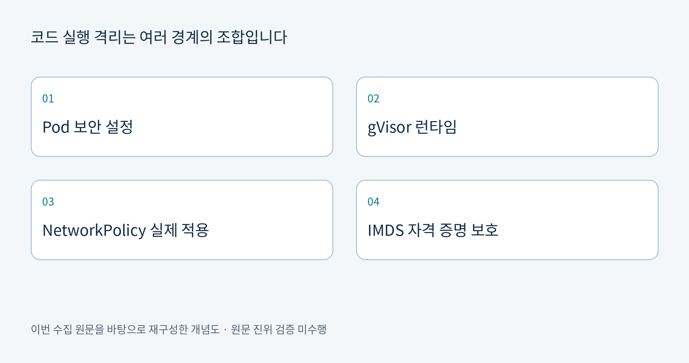
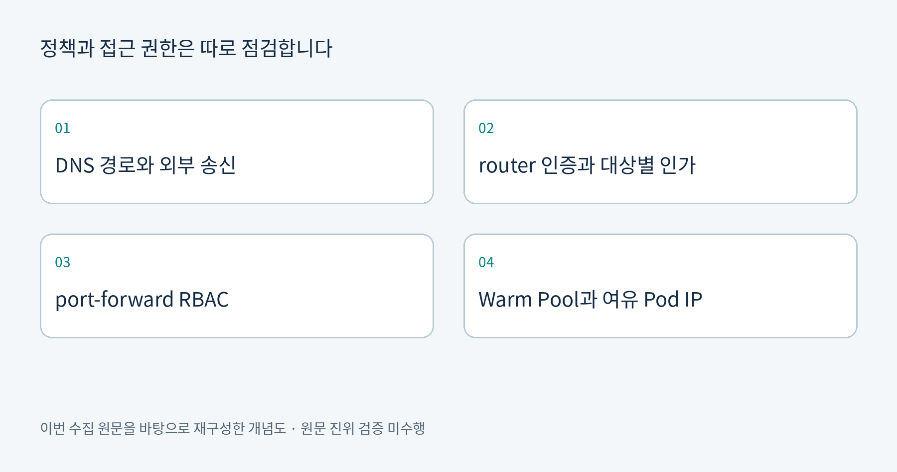
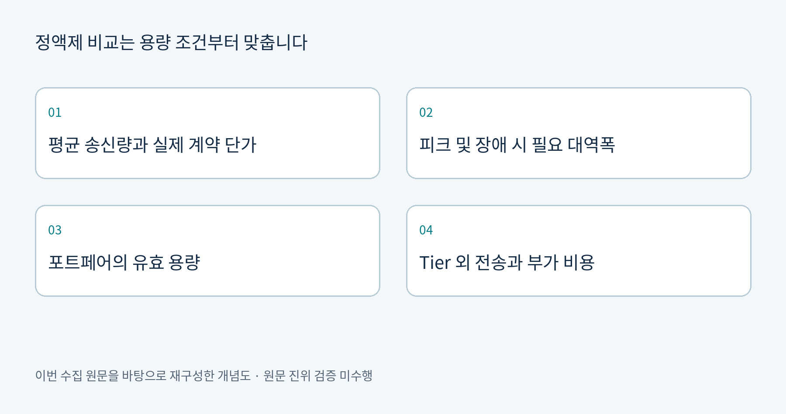

Amazon EKS 샌드박스의 통신·인증 경계를 점검합니다
원문은 NetworkPolicy 활성화 전후의 접근 차이, 공용 DNS 우회, TokenReview의 인가 한계를 설명합니다. Warm Pool과 Pod IP 재사용 대기의 상호작용도 측정했습니다.
원문을 읽습니다AWS 기술 블로그 · 2026-10-19
공식 RSS 3개 · 확인 50건 · 신규 원문 3건 · 기존 중복 1건
수집 시각 2026-10-19T07:01:53.547596+09:00 · 발행 범위는 실행 시점 이전 48시간입니다.
이번 신규 자료는 AWS 한국 기술 블로그의 샌드박스 시리즈 두 편과 Direct Connect 정액 요금 분석 한 편입니다. News Blog와 Machine Learning Blog에는 지정 시간 범위의 신규 후보가 없었습니다.
원문은 NetworkPolicy 활성화 전후의 접근 차이, 공용 DNS 우회, TokenReview의 인가 한계를 설명합니다. Warm Pool과 Pod IP 재사용 대기의 상호작용도 측정했습니다.
원문을 읽습니다원문은 Pod 보안 설정, gVisor, NetworkPolicy, 전용 노드 IMDS 설정을 조합합니다. Managed Node Group에 런타임을 등록하며 예제만으로 전체 환경 재현이 가능한 것은 아니라고 명시합니다.
원문을 읽습니다원문은 서울 경로의 가상 청구서를 이용해 포트페어와 독립 연결의 비용을 비교합니다. 포트페어의 유효 대역폭과 Tier 외 DTO·Transit Gateway 등 별도 비용을 구분합니다.
원문을 읽습니다샌드박스 두 편은 런타임의 격리와 자격 증명·네트워크 통제가 서로 대체 관계가 아니라고 설명합니다. 비용 분석은 저렴한 가격 비교에 앞서 장애 시 필요한 대역폭과 과금 범위를 맞추도록 요구합니다. 공통 분석 포인트는 기능 이름보다 구성의 경계와 비교 조건을 명시하는 데 있습니다.



관찰된 원문 내용: 원문은 NetworkPolicy 활성화 전후의 접근 차이, 공용 DNS 우회, TokenReview의 인가 한계를 설명합니다. Warm Pool과 Pod IP 재사용 대기의 상호작용도 측정했습니다.
근거 출처 URL: https://aws.amazon.com/ko/blogs/tech/aws-ai-agent-sandbox-eks-isolation-part-2/
분석・인사이트: 정책 객체의 존재와 실제 패킷 차단은 구분해야 합니다. DNS 경로·외부 송신·router 접근·port-forward 권한을 별도 시험하는 방안을 제안합니다.
관찰된 원문 내용: 원문은 Pod 보안 설정, gVisor, NetworkPolicy, 전용 노드 IMDS 설정을 조합합니다. Managed Node Group에 런타임을 등록하며 예제만으로 전체 환경 재현이 가능한 것은 아니라고 명시합니다.
근거 출처 URL: https://aws.amazon.com/ko/blogs/tech/aws-ai-agent-sandbox-eks-isolation-part-1/
분석・인사이트: gVisor만으로 모든 통제가 충족된다고 가정하지 않아야 합니다. 노드 유형과 런타임 설치 가능성, 기본 자격 증명 노출 여부를 사전 검토할 필요가 있습니다.
관찰된 원문 내용: 원문은 서울 경로의 가상 청구서를 이용해 포트페어와 독립 연결의 비용을 비교합니다. 포트페어의 유효 대역폭과 Tier 외 DTO·Transit Gateway 등 별도 비용을 구분합니다.
근거 출처 URL: https://aws.amazon.com/ko/blogs/tech/aws-direct-connect-flat-rate-breakeven-analysis/
분석・인사이트: 원문 절감률은 가정 기반 예시이므로 실제 절감 실적으로 읽으면 안 됩니다. 계약 단가·송신량·피크·장애 시 필요 용량을 넣어 재산정하는 검토를 제안합니다.
| 검토 대상 | 기회와 검토 후보 | 리스크 및 확인 필요 사항 |
|---|---|---|
| 코드 실행 플랫폼 | 샌드박스 템플릿으로 팀별 구성 차이를 줄이는 방안을 검토합니다. | Pod 생성 직후 차단, 외부 송신 허용 범위, router 대상별 인가를 별도 확인해야 합니다. |
| 서울 연결 경로 비용 | 실제 청구 단가와 송신량으로 정액제 경제성을 검토합니다. | 가상 청구서 절감률을 실제 절감 실적으로 일반화하지 않습니다. 장애 시 대역폭과 별도 비용을 포함해야 합니다. |
원문은 TokenReview가 유효 토큰 확인과 샌드박스별 사용 권한 확인을 구분한다고 설명합니다. 따라서 인증 성공을 대상별 인가 충족으로 간주하지 않는 검토가 필요합니다. Direct Connect 자료의 가상 비용은 계약 할인과 회선료 등 전체 비용을 대신하지 않습니다.
원본 HTML과 추출 본문은 비공개 로컬 raw 영역에 보존했습니다. 이 공개 보고서에는 한국어 분석과 출처 링크만 포함합니다. 성능과 비용 수치를 독립적으로 재측정하거나 검증하지 않았습니다.
GPT Image 2 생성은 Amy 프로필의 사용 가능한 ChatGPT Auth 토큰을 찾지 못해 중단됐습니다. 다른 프로필 자격 증명이나 API 키를 쓰지 않고 한국어 개념도 PNG 3개로 대체했습니다.
지식 등록・검색 상태는 아래 실행 결과와 별도 완료 보고를 따릅니다.